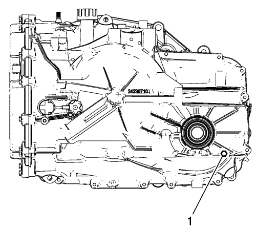

Comprobación del nivel y el estado del aceite del cambio
Este procedimiento comprueba tanto el nivel del aceite del cambio como las condiciones del propio aceite.
Si quiere obtener más información, y un vídeo con instrucciones, puede hacerlo a través de los siguientes sitios web de formación de GM: www.gmtraining.com: 17041.62V - Procedimientos de comprobación y llenado del líquido del cambio automático de 6 velocidades, www.gmtrainingcollege.com: A26021.01T - Procedimiento de comprobación y llenado del líquido del cambio automático de 6 velocidades.
Atención: Utilice exclusivamente el líquido para la transmisión Dexron VI. De no utilizar el líquido adecuado, la transmisión podría sufrir daños internos.
Nota: Asegúrese de que el cambio dispone de suficiente aceite para arrancar con seguridad el vehículo sin dañar el cambio. Con el vehículo apagado y la temperatura del aceite del cambio a 20-25 °C (68-77 °F) aproximadamente, debe haber al menos suficiente aceite como para que salga por el orificio de nivel del aceite. Esto garantiza que habrá suficiente aceite en el cárter para llenar los componentes una vez arrancado el vehículo.
Procedimiento de comprobación del nivel sin varilla de medición
- Arranque el motor.
- Pise el pedal de freno y mueva la palanca de cambio pasando por todas las posiciones de marcha, haciendo una pausa de unos 3 segundos en cada posición. A continuación, vuelva a poner la palanca de cambio en ESTACIONAR (P).
- Deje el motor al ralentí a 500-800 r.p.m. durante al menos 3 minutos para que se disipe la espuma de aceite que puede haberse formado y para estabilizar el nivel del aceite. Suelte el pedal de freno.
Nota: Si la lectura de la TFT no está a la temperatura requerida, deje enfriar el vehículo o hágalo funcionar hasta que se alcance la TFT apropiada. Si la temperatura del aceite es inferior al intervalo especificado, realice lo siguiente para aumentar la temperatura del aceite hasta la especificada.
Haga funcionar el vehículo en 2ª marcha hasta que la temperatura del aceite esté a la temperatura especificada.
- Mantenga el motor en marcha y observe la temperatura del aceite del cambio (TFT) mediante el Centro de información del conductor o una herramienta de diagnóstico.
Atención: El nivel del líquido de la transmisión debe comprobarse cuando la temperatura del líquido (TFT) alcance los 85-95°C (185-203°F). Si el TFT no estuviera a esta temperatura, ponga en marcha el vehículo o permita que el líquido se enfríe hasta el nivel necesario. El ajuste el nivel de líquido con un TFT fuera de esta temperatura conllevará una transmisión llena a un nivel superior o inferior al deseado. TFT 95°C llenado insuficiente, TFT 85°C sobrellenado. Una transmisión con un llenado insuficiente ocasionará un desgaste prematuro o daños en sus componentes. Una transmisión sobrellenada provocará la descarga del líquido fuera del tubo de venteo, el espumado del líquido o cavitación de la bomba.
- Levante el vehículo usando un elevador. El vehículo debe estar nivelado, con el motor en marcha y la palanca de cambio en la posición ESTACIONAMIENTO (P).

- Con el vehículo en ralentí, extraiga el tapón de establecimiento del nivel del aceite. Deje que se vacíe el aceite.
Tapón de nivel del aceite (1)
| • | Si el flujo de aceite es continuo, espere hasta que el aceite empieza a gotear. |
| • | Si no sale aceite, añada aceite hasta que gotee. |
- Compruebe el color del aceite. El aceite debería ser rojo o marrón oscuro.
| • | Si el color del aceite es muy oscuro o negro y huele a quemado, compruebe si hay un exceso de partículas de metal u otros residuos en el aceite. Una pequeña cantidad de material de "fricción" es algo "normal". Si se observan partículas de metal y/o piezas grandes en el aceite, limpie el refrigerador de aceite y las tuberías del refrigerador y revise el cambio. Si no hay señales de daños internos en el cambio, sustituya el aceite, repare el refrigerador de aceite y limpie las tuberías del refrigerador. |
- Compruebe si existen fugas externas. Consultar Diagnosis de fugas de líquido .
- Si se ha cambiado el aceite, reinicie el control de la vida útil del aceite del cambio, si procede.
Procedimiento de comprobación del nivel con varilla de medición (si está disponible)
- Estacione el vehículo en una superficie nivelada, accione el freno de mano y coloque la palanca de cambio en ESTACIONAMIENTO (P). Arranque el motor.
- Pise el pedal de freno y mueva la palanca de cambio pasando por todas las posiciones de marcha, haciendo una pausa de unos 3 segundos en cada posición. A continuación, vuelva a poner la palanca de cambio en ESTACIONAR (P).
- Deje el motor al ralentí a 500-800 r.p.m. durante al menos 3 minutos para que se disipe la espuma de aceite que puede haberse formado y para estabilizar el nivel del aceite. Suelte el pedal de freno.
- Mantenga el motor en marcha y observe la temperatura del aceite del cambio (TFT) mediante el Centro de información del conductor o una herramienta de diagnóstico.
Atención: El nivel del líquido de la transmisión debe comprobarse cuando la temperatura del líquido (TFT) alcance los 85-95°C (185-203°F). Si el TFT no estuviera a esta temperatura, ponga en marcha el vehículo o permita que el líquido se enfríe hasta el nivel necesario. El ajuste el nivel de líquido con un TFT fuera de esta temperatura conllevará una transmisión llena a un nivel superior o inferior al deseado. TFT 95°C llenado insuficiente, TFT 85°C sobrellenado. Una transmisión con un llenado insuficiente ocasionará un desgaste prematuro o daños en sus componentes. Una transmisión sobrellenada provocará la descarga del líquido fuera del tubo de venteo, el espumado del líquido o cavitación de la bomba.
Nota:
| • | Si la lectura de la TFT no está a la temperatura requerida, deje enfriar el vehículo o hágalo funcionar hasta que se alcance la TFT apropiada. Si la temperatura del aceite es inferior al intervalo especificado, realice lo siguiente para aumentar la temperatura del aceite hasta la especificada. |
| • | Compruebe le nivel del aceite del cambio cuando la TFT esté entre 85-95 °C (185-203 °F). El nivel del aceite sube según aumenta la temperatura del aceite, por lo que es importante asegurarse de que la temperatura del aceite de cambio esté a la temperatura especificada. |
| | Haga funcionar el vehículo en 2ª marcha hasta que la temperatura del aceite esté a la temperatura especificada. |
- El vehículo debe estar nivelado, con el motor en marcha y la palanca de cambio en la posición ESTACIONAMIENTO (P).
- Extraiga la varilla de medición y límpiela con una toalla de papel o un trapo limpios.
- Compruebe el color del aceite. El aceite debería ser rojo o marrón oscuro.
| • | Si el color del aceite es muy oscuro o negro y huele a quemado, compruebe si hay un exceso de partículas de metal u otros residuos en el aceite. Una pequeña cantidad de material de "fricción" es algo "normal". Si se observan partículas de metal y/o piezas grandes en el aceite, limpie el refrigerador de aceite y las tuberías del refrigerador y revise el cambio. Si no hay señales de daños internos en el cambio, sustituya el aceite, repare el refrigerador de aceite y limpie las tuberías del refrigerador. |
- Monte la varilla de medición. Espere tres segundos y, a continuación, extráigala de nuevo.
Nota: Compruebe siempre el nivel del aceite al menos dos veces. Es importante realizar lecturas coherentes para mantener el nivel de aceite adecuado. Si se observan lecturas incoherentes, compruebe que la caperuza de ventilación del cambio está limpia y sin obstrucciones.
Nota: No es necesario que el nivel del aceite llegue a la marca MAX (máx.). Cualquier nivel dentro de la banda cuadriculada es aceptable.
- Compruebe ambos lados de la varilla de medición y lea el nivel más bajo.
- Vuelva a montar y a extraer la varilla de medición para verificar la lectura.
Nota: No añada más de media pinta (0,25 l) de una vez sin volver a comprobar el nivel. Una vez que el aceite esté en la viñeta de la varilla de medición, no será necesario mucho más aceite para que el nivel del aceite suba hasta la banda cuadriculada. No sobrellene. Del mismo modo, si el nivel del aceite es bajo, compruebe si hay fugas en el cambio. Consultar Diagnosis de fugas de líquido .
- Si el nivel del aceite no está dentro de la banda cuadriculada y la temperatura del cambio está a 90 °C (194 °F), añada o vacíe aceite según se requiera para que el nivel se sitúe en la banda cuadriculada. Si el nivel del aceite es bajo, añada únicamente el aceite suficiente para que el nivel se sitúe en la banda cuadriculada.
- Si el nivel del aceite está en el intervalo aceptable, instale la varilla de medición.
- Si se ha cambiado el aceite, reinicie el control de la vida útil del aceite del cambio, si procede.
Inspección de la condición del aceite
| • | Compruebe el color del aceite. El aceite debería ser de color rojo. El aceite también se puede hacer marrón a causa del uso normal y no siempre indica una contaminación. |
| | Nota: El aceite que es demasiado oscuro o negro y que huele a quemado suele indicar contaminación o calentamiento excesivo. |
| • | Si el color del aceite es muy oscuro o negro y huele a quemado, compruebe si hay un exceso de partículas de metal u otros residuos en el aceite, lo que podría indicar daños en el cambio. Consulte Prueba en carretera para verificar el funcionamiento del cambio. Cambie el aceite del cambio si no se encuentran más condiciones. |
| © Copyright Chevrolet Europe. All rights reserved |